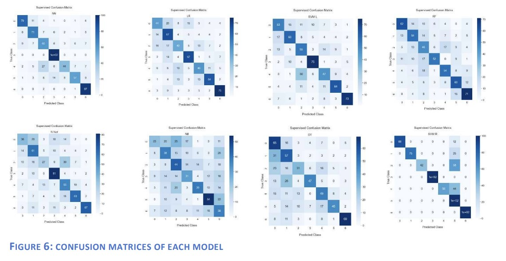
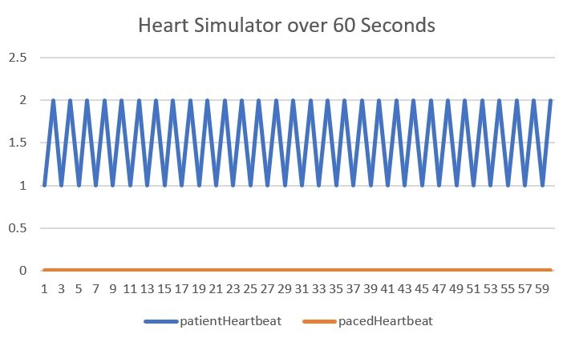

This project uses machine learning models to help develop more accurate diagnostics that could later be
used by individuals with unclassified skin lesions. I selected the models based on popular models already used for classifications. These
consist of 8 linear and non-linear models: K-Nearest Neighbour, Logistic Regression, SVM-Linear, SVMRBF, Decision Trees, Random Forest, Neural Net, and Naïve-Bayes.
After heavy analysis of graphical data plots and visualisation, the project determined that the SVMRBF classification model produced a 75.6% test accuracy which was significantly more successful
than all other classifiers that were tested with 3 out of 6 classes have zero misclassifications


This project aims to improve the trust and support amongst businesses as industry becomes more
reliant on digital currency and automation. Blockchain explorers are becoming increasingly
necessary to provide a clear and easy way to view encoded data that is stored on the blockchain.
This project has explored how to produce a blockchain explorer to improve the transparency between
different business within industry by providing a simple way to view detailed blockchain data.
The efficiency of the system has been tested to measure whether the
explorer is scalable in the future as more people begin to use blockchain.
By increasing transparency and trust amongst users there will be more opportunities for
companies to develop and evolve over time.

Cyber threats are constantly happening, and developers are always trying to find ways to get the better of adversaries to protect
confidentiality, integrity, and availability. In recent years, more vulnerabilities are being
published leading to the need for a clear strategy for how developers should patch vulnerabilities
before they are exploited. This paper introduces new methods using Reddit data and Natural Language
Processing techniques to estimate when a vulnerability will be exploited following disclosure.
The data is gathered using CVE IDs and ground truths are gathered from Exploit-DB to validate the
labels. The paper attempts to address the class imbalance that is experienced due to less than 15%
of vulnerabilities being exploited. Previous work has tried to predict whether a vulnerability will
be exploited. However, not many have attempted estimating when the model will be exploited. The
models produce F1 scores of 0.56 for classification, significantly improving upon the baselines
and the regression models produce MAE scores of 71.8.
Java, Git Version Control

This is a private project for MSc Cyber Security students to develop a pacemaker simulator.